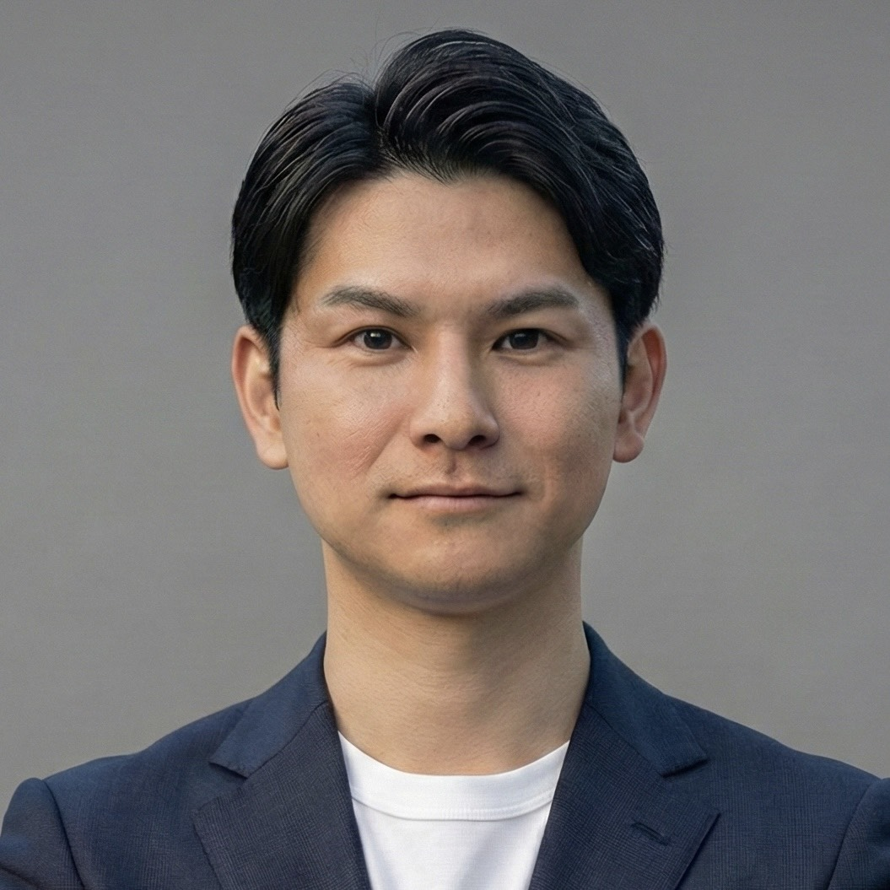

PLAN 01
立ち上げ支援
有料職業紹介の許可取得前後から、事業として動き出すまでを支援します。許可申請のサポートから黒字化まで、複数社の実績があります。
- 事業計画と、収益の置き方
- 求人開拓と、クライアント獲得の型
- RA・CAの業務フロー
- 有料職業紹介の許可申請サポート
戦略・診断から、仕組み化、実行代行、CA育成まで。
一気通貫で伴走します。
許可取得前後の立ち上げも、数字や人が止まっている既存事業の立て直しも対象です。大手HR出身150名のプロが、設計だけで終わらず、現場の実行とCA（キャリアアドバイザー）の育成まで入ります。
大手HR出身150名のプロフェッショナルと、6社のパートナーが選ぶ体制。


許可は取れた。しかし求人開拓も候補者対応も、担当者の経験に頼っている。
売上は出る月と止まる月がある。どこが詰まっているのか、数字で説明できない。
CAが育つ前に、現場が回らなくなる。教える時間を、誰も取れていない。
人が替わると、また一からになる。再現できる型が、社内に残っていない。
対象は、人材紹介会社の経営者と事業責任者です。どちらのプランも、次の4ステップを通して伴走します。料金は、無料相談のうえでご提案します。
有料職業紹介の許可取得前後から、事業として動き出すまでを支援します。許可申請のサポートから黒字化まで、複数社の実績があります。
すでに人材紹介事業をしている会社向けです。数字、人、型のどこが止まっているかを診断し、動き出すところまで伴走します。
初回のご相談も、ご提案も無料です。立ち上げか立て直しか、まだ切り分けが曖昧な段階でも構いません。
戦略の資料を渡して終わりにはしません。型にし、必要な工程は一緒に手を動かし、CAが育つところまで入ります。
許可の状況、収益の置き方、求人と候補者の流れ、人の配置を伺い、どこから手を付けるかを論点にします。
求人開拓、候補者対応、数字の見方、日々の業務を、担当者が変わっても回る型にします。
設計だけで終わりません。求人開拓や候補者対応など、必要な工程は一緒に手を動かします。
キャリアアドバイザーが候補者対応を一人で進められるまで伴走します。見る観点と振り返りを、個人の経験に閉じない形で残します。
人材紹介の現場を運営してきた人間と、事業会社の採用を見てきた人間が、同じチームにいます。
PASONA・PERSOL・RECRUIT・JAC出身のプロ150名が、人材紹介事業の運営と、事業会社の採用の両方を踏まえて支援します。
論点整理だけでは事業は動きません。型にしたあと、必要な工程は一緒に手を動かします。
特定の担当者の経験に閉じず、型と、見るべき数字が社内に残ることをゴールにします。
人材紹介事業の支援に加えて、事業会社向けの採用・人事の支援も続けています。いずれも料金は個別にご提案します。
公式LINE・Slack・スプレッドシートなど、すでにあるツールで始められます。新しいSaaSの契約は不要です。退職理由、在籍時の評価、関係の温度の3軸でプールを設計し、層ごとの再接触を継続します。
標準は4層です。カムバック層（再雇用の可能性が高い層）、ビジネス連携層（業務委託・協業・紹介）、情報取得層（近況や求人を受け取る層）、アドバイス層（外部の視点で知見を返す層）。
ご相談は、お問い合わせの「その他」からどうぞ。アルムナイ採用ガイドブックもご覧いただけます。
自社開発の採用AI「Recruit AI Ops」。AIが処理し、人間が判断します。
採用工程の約80%をAIが自動化（求人作成AI・スカウトAI・書類選考AI・日程調整AI・面接官AIの5工程）。うち書類選考AIは選考工数を最大70%削減。
独自のHRノウハウ×ロジックで作成したAI。「手作業RPO」と「完全自動化」の中間に位置し、人の判断×AIのサポートでスピードと正確性を担保します。
※人事戦略の代行サービス「CHRO代行」とは別の、自社開発AIモデルです。
自社でHRプロダクトも開発・運用しています。
"返信率"を科学したスカウトAI。IT業界採用10年以上の知見をAI化し、候補者が返したくなる「9ブロック構造」でスカウト文を生成。平均返信率15%（従来比3倍）を実現します。
※年収・手数料は決定時点の実績です。
※成果は支援内容・企業状況により異なります。詳細は導入事例集（資料ダウンロード）をご覧ください。
人材紹介の現場と、事業会社の採用の両方を歩いてきたメンバーが伴走します。

「2010年に上智大学文学部史学科を卒業し、クラブツーリズム株式会社へ。約5年間、富裕層向けクルーズ客船（飛鳥II・にっぽん丸・プリンセスクルーズ等）のツアー企画・販売に従事した。」
「2015年に人材業界へ転身。SIer・ITコンサル・事業会社の情報システム部門・SaaS企業まで、IT領域の人材紹介を幅広く担当し、技術職サーチを得意とする。」
「IT領域の人材紹介組織を率いる部長として、チームマネジメントとSFA（営業支援）の全社推進を担当。並行して生成AIを活用した面接・採用支援に取り組み、『生成AI×面接コンサル』を専門領域として発信。」
「2025年設立のAlumNET株式会社 共同代表取締役に就任。人材紹介の知見と生成AIの実装力を掛け合わせ、データドリブンな採用・人事支援を展開する。」
上智大学文学部史学科卒業。旅行業界を経て2015年にパソナへ入社し、約8年にわたりIT領域の人材紹介に従事。SIerからSaaS企業まで幅広い技術職のリクルーティングを牽引してきた。部長職としての組織マネジメントに加え、生成AIを活用した面接・採用支援を専門領域とし、「人材 × AI」の実装者として発信を続ける。国家資格キャリアコンサルタント。その発信力が評価され「Japan's Top 100 LinkedIn Leaders」に選出。2025年、AlumNET株式会社の共同代表取締役に就任し、データドリブンな採用・人事支援に取り組んでいる。
「外資系IT・コンサルティング企業向けの採用支援に従事。ハイクオリティな採用を求めるクライアントに、採用戦略の立案から実行まで一気通貫で伴走。」
「新規事業の立ち上げと連動した採用支援・組織構築に携わる。事業フェーズに合わせた採用設計と人材獲得モデルを構築。」
「デジタルマーケティング領域のインド法人にてCHROを歴任。グローバル採用・組織設計・人事制度構築を統括し、国内外の採用・組織課題に対応できる視座を磨いた。」
「RPOの安定受託モデルを基盤に、人事戦略の立案から実行支援まで一気通貫で提供。企業の『人を活かす力』を最大化することに注力。」
パソナで外資系IT・コンサル企業向けの採用支援に従事した後、独立。新規事業の立ち上げと連動した採用支援・組織構築を行い、インド法人でCHROを歴任するなどグローバル採用・組織設計・人事制度構築の実践経験を積み重ねてきた。RPOの安定受託モデルを基盤に、人事戦略の立案から実行支援まで一気通貫で提供し、企業の『人を活かす力』を最大化することに注力している。
初回のご相談も、ご提案も無料です。課題が明確でない段階でも歓迎します。
初回のご相談も、ご提案も無料です。
立ち上げか立て直しか、まだ決まっていなくても構いません。